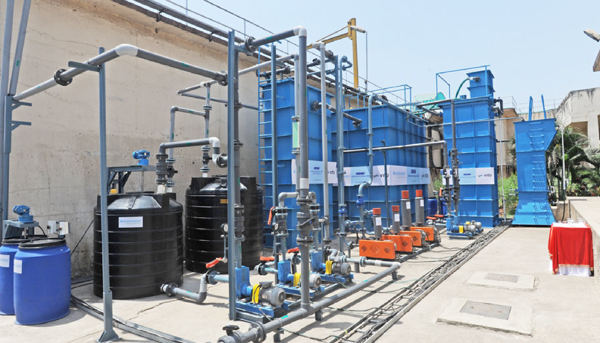

Sewage Treatment Plants (STP) are designed to treat domestic and industrial wastewater to remove contaminants, making the water safe for discharge or reuse. Explore the features, process, and applications of STPs below.
Overview
Sewage Treatment Plants (STP) are used to process and treat wastewater from residential, industrial, and commercial sources. They help in removing harmful contaminants from the water to make it safe for reuse or discharge into the environment. STPs are designed to work efficiently for both small and large-scale operations.
Features
- Advanced Filtration Technology: Ensures effective removal of solids, oils, and other contaminants.
- Multi-Stage Treatment: Includes primary, secondary, and tertiary treatment stages for comprehensive water purification.
- Compact Design: Space-efficient design suitable for both small and large scale installations.
- Eco-Friendly: Helps in recycling and reusing water while reducing environmental pollution.
- Energy Efficient: Designed to minimize energy consumption while providing optimal treatment.
Process
The STP treatment process generally follows these stages:
- Pre-Treatment: Large solids and debris are removed using screening processes.
- Primary Treatment: Sedimentation tanks remove suspended solids from the wastewater.
- Secondary Treatment: Biological processes (such as activated sludge or trickling filters) break down organic matter.
- Tertiary Treatment: Advanced filtration techniques, such as UV treatment or chemical dosing, remove remaining contaminants.
- Disinfection: The treated water is disinfected to kill remaining pathogens before being released or reused.

Applications
- Residential: Used in residential complexes and housing societies to treat domestic sewage.
- Commercial: Applied in hotels, restaurants, and office buildings to manage wastewater.
- Industrial: Helps in treating industrial effluents from manufacturing processes.
- Agriculture: Treated wastewater can be reused for irrigation purposes, reducing water consumption.
- Municipal: Large-scale STPs treat municipal sewage to make water safe for discharge or reuse.